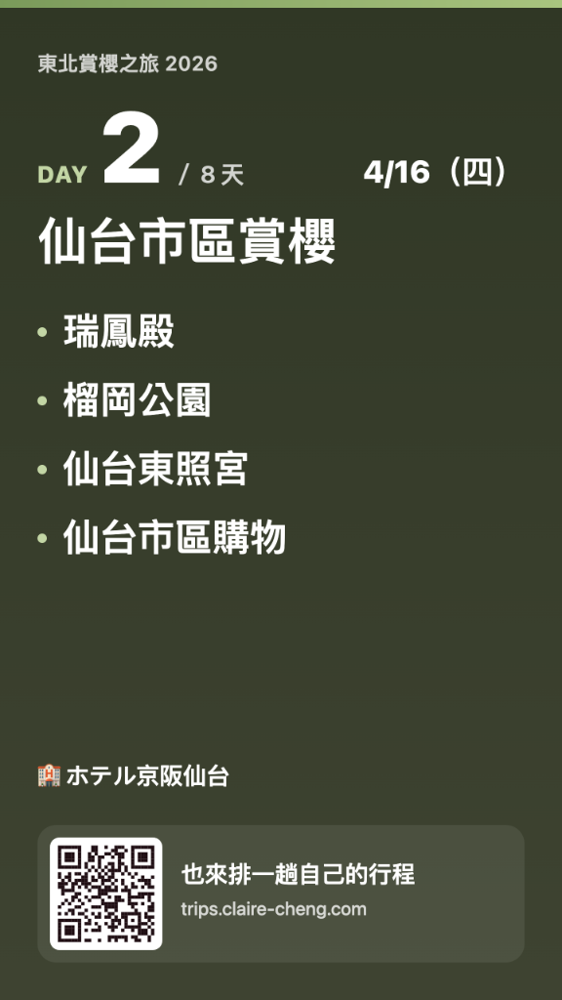
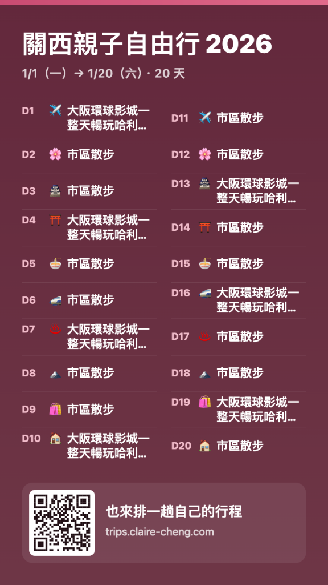

每次排自由行，出發前我的 Google 文件總是整理得很完整：哪天去哪裡、住宿航班、地圖連結全都清清楚楚。
但一到當地，往往變成站在路口手忙腳亂。一邊要在文件裡翻找地址、複製貼進地圖導航，一邊還要切換通訊軟體跟旅伴對集合時間。整趟走下來，光是找資料就累壞了，根本沒力氣好好看風景。
我想要一個真正順手的隨身工具：免註冊、行程不存任何伺服器、加到手機桌面就像專屬 App，所有景點點一下直接開導航。
把找路的時間省下來，好好享受眼前的風景與身邊的旅伴。
Claire Cheng · 2026 春
不用註冊，10 分鐘把排好的行程變成手機桌面 App。
點一下直接開地圖導航，內容絕不存到伺服器。
照著四步驟指引，就能做出加到手機桌面、像 App 一樣隨開隨用的行程頁。分享連結就能傳給旅伴一起看，每日時間軸、Google 地圖導航、住宿航班、行前清單（打包/購物）都幫你整理好；進階模式還能加上即時記帳與集合倒數。
• 範例沒有設定 PIN 碼，點開就能直接看
• （你自己製作時可以自訂 PIN 碼隨手防看）
解決現場找路、找車位、看天氣與傳群組的各種小麻煩
在行程裡收好 Google 地圖定位。到了當地點一下立刻規劃路線，出國找路不再手忙腳亂。
景點貼上地圖連結，自動載入出發前 16 天即時氣候預報。精準掌握冷暖溫差與降雨，穿搭厚薄一目了然。
快到景點時不用盲滑地圖或切換外文輸入法。點一下自動帶入當地語言搜尋附近停車場，副駕找位更從容。
出發當天不用在群組反覆說明行程。一鍵將當天日程匯出成極簡風格小卡，還能放上當日代表照片，傳給旅伴對時間超清楚，訂位代號、住宿地點、天氣也能隨選隱藏保護隱私；
整趟行程還能匯出成俐落的 9:16 直式海報，發到社群限動超美觀，底部附帶旅人手帖 QR Code，讓好友隨手一掃也能做一本自己的專屬手帖！


不用學習複雜工具，把原本排好的筆記直接變成專屬隨身手帖
複製預設提示詞交給常用 AI，雜亂筆記與機票訂房截圖自動轉為結構化日程。
貼入景點的地圖分享連結，自動辨識地點與 16 天氣象；補齊交通航班，隨手自訂防看密碼。
挑選 7 款風格主題配色。預覽畫面即時套用真實行程與成員名單，所見即所得。
在手機瀏覽器點選「加入主畫面」，隨開隨用；一行專屬連結傳到群組，旅伴點開就能看。
一個人開發的純粹工具，沒有商業花招，只做好兩件事
預設模式下，行程資料直接編碼在你產生的專屬連結裡，由旅伴的瀏覽器端解碼顯示——旅人手帖的伺服器不會留存你的行程內容，也不會蒐集個人足跡。
如果需要跟旅伴多人即時記帳與集合定位，可以串接由你自己申請、自己管理的 Firebase，資料存在你自己的帳號裡，不是我們的伺服器。
這是一個因自己旅行痛點而生的小作品。沒有付費解鎖、沒有訂閱制、沒有煩人的註冊廣告。
整套工具完全開源並採 MIT 授權釋出，任何人都可以自由使用、修改原始碼，甚至架設改造成屬於你自己的專屬版本。
每次排自由行，出發前我的 Google 文件總是整理得很完整：哪天去哪裡、住宿航班、地圖連結全都清清楚楚。
但一到當地，往往變成站在路口手忙腳亂。一邊要在文件裡翻找地址、複製貼進地圖導航，一邊還要切換通訊軟體跟旅伴對集合時間。整趟走下來，光是找資料就累壞了，根本沒力氣好好看風景。
我想要一個真正順手的隨身工具：免註冊、行程不存任何伺服器、加到手機桌面就像專屬 App，所有景點點一下直接開導航。
把找路的時間省下來，好好享受眼前的風景與身邊的旅伴。